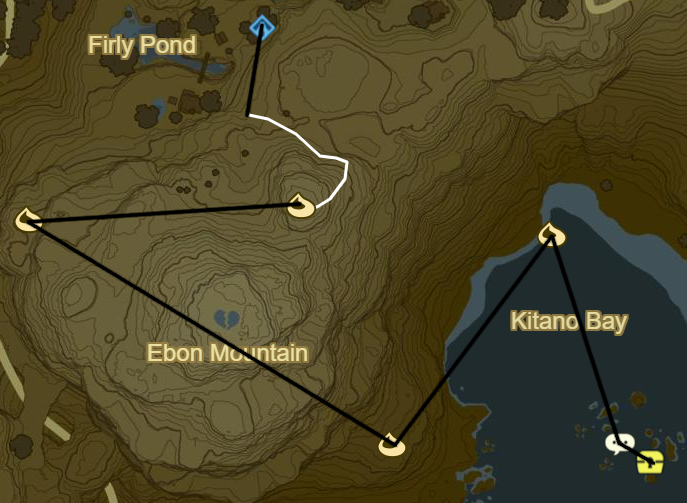

Hateno 1
Korok 056: Pinwheel shooting atop wall
Shrine Quest: The Cursed Statue
Inside Cabin
Korok 057: Rock beneath metal door to NW near wall
Korok 058: Rock beneath cracked boulder to N
Korok 059: Roll boulder to N
Head to statue filled valley to E
Kam Urog Shrine (10/120)
Shoot glowing statue eyes at night
Korok 060: Apple offering S of Kam Urog
Follow Path East
Korok 061: Acorn in tree East of Thin Bridge
Head over thin bridge then head West up the Cliffs of Quince
Korok 062: Magnesis Puzzle atop cliffs
Cliffs of Quince Stone Talus to S (6/40)
Hateno Tower to SE
Follow Path South towards Marblod Plain
Korok 063: Acorn in tree south of path split
Korok 064: Apple Trees to E
Follow Path NE to Midla Woods
Korok 065: Acorn in tree just NE of path split
Follow path NE into Hateno Village
Side Quest: The Weapon Connoisseur
Traveler's Sword
Fire Rod
Moblin Club
Duplex Bow
Windcleaver
Ancient Battleaxe+
Frostspear
Ancient Short Sword
Side Quest: The Statue's Bargain
Myahm Agana Shrine (11/120)
Side Quest: Hylian Homeowner
3,000 rupees
30 bundles of wood
1,400 Rupees for interior
Side Quest: From the Ground Up
Korok 066: Rock below bridge to house
Shrine Quest: Secret of the Cedars
Shrine Quest: The Spring of Wisdom
Side Quest: A Gift for My Beloved
10 Restless Crickets
Korok 067: Rock atop tree N of Zelkoa Pond
Collect Blue Flame to S
Side Quest: The Sheep Rustlers
Farmhouse up towards Hateno Ancient Tech Lab
Deliver Flame to Hateno Ancient Tech Lab
Korok 068: Tree in centre of Lake Sumac to NW
Warp back to Lab
Repair Sheikah Slate
Side Quest: Slated for Upgrades
Sensor: 3 Ancient Screws
Side Quest: Sunshroom Sensing
Bombs: 3 Ancient Shafts
Stasis: 3 Ancient Cores
Side Quest: Robbie's Research
Korok 069: Fairylights atop Hateno Ancient Tech Lab
Korok 070: Lilies to E of Hateno Ancient Tech Lab
Take out enemy encampment SE on Hateno beach for Side Quest
Korok 071: Flower trail to S
Korok 072: Palm Fruit Offering to NE
Head E across Deepback Bay
Korok 073: Rock Pattern on Central Shore
Luminous Stone Talus: Bay Centre (7/40)
Korok 074: Lilies N of Talus
Korok 075: Flower trail to SE up Mapla Point
Korok 076: Pinwheel Shooting to NW
Warp Back to Myahm Agana Shrine

Korok 077: Flower Trail E of House
Korok 078: Magnesis Puzzle to W
Korok 079: Rock pattern over Ebon Mountain to SE
Korok 080: Rock circle to NE
Side Quest: The Hero's Cache to SE
Reef to South
Warp to Ta'loh Naeg Shrine
Next: [Dueling Peaks 2](04 - DP2.md)